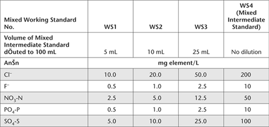

This variant of the IC technology described in 5A3a and in Method 14E2a shares many of the same analytical capabilities, advantages and disadvantages. The technology, however, has higher sensitivity (see APHA-AWWA-WEF 2005d) so requires high-quality reagents. Anions in aqueous extracts within mg/L concentration ranges separate in the order F–, Cl–, NO2–, Br–,–, HPO42–, and SO42–, with individual analyses able to be completed typically within 30 min using only a few mL of SE. No particles passing through the system should exceed 0.45 μm (<0.20 μm preferred), and best separations occur when sample pH values range between 5 and 9. The approximate detection limit is 0.1 mg/L, with an injection volume of 100 μL. Monovalent ClO4– and Br– will coelute under the specified conditions, if present in measurable quantities. Refer to Method 5A3b, Australian Standard AS 3741 (Anon 1990), APHA-AWWA-WEF (2005d) and Thorne (2004) for further details.
Reagent Water
As for Method 14E2a.
Borate/Gluconate Concentrate
As for Method 5A3b.
Eluent Solution [0.011 M borate, 0.0015 M gluconate, and 12% (v/v) acetonitrile].
As for Method 5A3b.
Chloride Primary Standard
1 L contains 10 000 mg of Cl.
Prepare and store as for Method 14E2a.
Mixed Intermediate Standard
Prepare a Chloride Intermediate Standard (mixed with other anions of interest) according to Table 14.3 of Method 14E2a.
Mixed Working Standards
Prepare by transferring the required amount of Mixed Intermediate Standard to 100 mL volumetric flasks according to Table 14.4 of Method 14E2a. Concentration/s can be increased/varied to suite the particular equipment and column/s. These solutions should be prepared fresh daily if they contain NO3– and/or HPO42–; otherwise prepare weekly.
Ion Chromatograph, etc.
All details are similar to those provided in the corresponding section of Method 5A3b.
Set up the IC in accord with manufacturer’s instructions. Specifications typically change over time. Equilibrate the system at constant temperature for approximately 15–20 min or until a stable baseline is obtained. Make other instrumental adjustments in accord with expected Cl– concentrations (and in accord with other anions of interest). Determine the retention time for Cl– (and other anions of interest), guided by Methods 5A3b and 14E2a.
As for Method 14E2a, SE of soils will need to be diluted before introduction into the sample entry port to minimise interferences from total dissolved salts. This dilution ratio will depend on the instrument and sample injection volume. Table 14.5 provides suggested dilution ratios. Filter diluted extracts as necessary to remove particles >0.20 μm, using PES filters or equivalent.
Analyse the Reagent Water blank and the four Mixed Working Standards by injecting the appropriate sample volume, depending on manufacturer’s recommendations. Prepare calibration curves for Cl– (and all other anions of interest) by plotting peak height or peak area – from the chromatogram – against the concentrations of the anion calibration solutions. Analyse SE by injecting the same volume as for standards. Record all dilutions, the ion chromatogram, and evaluate peak height or peak area as required for comparison with the relevant calibration curve.
Report Cl–/SE concentrations with the relevant method codes and units as detailed in Method 14E2a.
Table 14.3. Volumes of specified Primary Standards used to prepare 1.0 L of Mixed Intermediate Standard.
Anion |
Concentration of Primary Standards (mg element/L) |
Volume of Primary Standards (mL) |
Anion Concentration (mg element/L) |
Cl– |
10 000 |
20 |
200 |
F– |
1000 |
10 |
10 |
NO3-N |
1000 |
50 |
50 |
PO4-P |
1000 |
10 |
10 |
SO4-S |
1000 |
100 |
100 |
Table 14.4. Volumes of Mixed Intermediate Standard to prepare 100 mL volumes of Mixed Working Standards (WS) for calibrating the IC for SEs of soil.

Table 14.5. Suggested dilution ratios for a Dionex DX 500 to minimise interferences from total dissolved salts.
Conductivity Range (dS/m) |
Dilution Ratio |
5–10 |
1:5 (1+4 with Reagent Water) |
>10–25 |
1:20 (1+19 with Reagent Water) |
>25–50 |
1:50 (1+49 with Reagent Water) |
> 50 |
1:100 (1+99 with Reagent Water) |